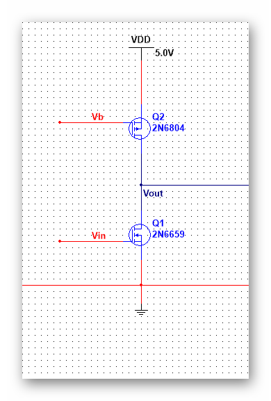

| 模拟集成电路 | |
目录： 一之MOS器件 二之单级放大器 三之差动放大器 四之电流镜偏置 五之共源电阻负载 六之共源二极管负载 七之共源电流源负载 八之共源电流反馈 九之线性区MOS负载 十之共源极负反馈负载 十一之源跟随器（共漏） 十二之共栅极 十三之共源共栅 十四之差动放大器 十五之电流镜 十六之偏置电路 十七之小技巧1 十八之小技巧2 返回页： 类似页：
|
五、工作在线性区的MOS为负载的共源极 工作在线性区，可以直接算出负载的阻值， 但是这个电路的缺点也很明显，Ron（MOS的线性负载）的值对u，Cox，W/L和Vthp的依赖明显，很难制造准确的增益器件，而且Vb也需要复杂的电路。 优点是线性负载消耗的余度较二极管型小。 这个电路的使用频率并不高。 前面五种电路就是负载共源极接法的常见方式。
|
|---|---|